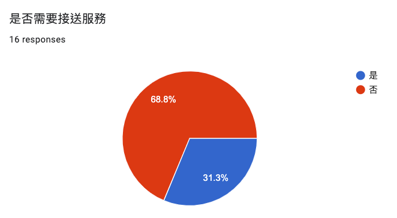

南師語教81級同學會第二階段調查報告

1. 調查結果
本次問卷採「於社交群組公佈開放問卷連結」方式實施，群組人數計24人，共16人回覆並完整填答，回覆率達67%。各項調查結果分述如下。
1.1. 辦理日期
如圖1所示，多數同學暑假都蠻閒的，為避開可能的週末出遊人潮，此次同學會決定於8月10日(週四)辦理。
Figure 1: 絕對無法參加的日期
1.2. 參加人數
目前儘有一位同學攜伴參加(見圖2)，此義舉不但大幅提升此次同學會參與人數，也降低與會人員所需均攤的費用，本委員會在此予以高度表揚。
Figure 2: 參加人數(包含你自己)
1.3. 參加人員名單
| 朱學宏 |
| 吳明方 |
| 夏慧珍 |
| 黃慧萍 |
| 廖世河 |
| 蔡欣俶 |
| 黃師孔 |
| 陳幸永 |
| 林玄淞 |
| 吳麗娟 |
| 楊曉芳 |
| 李桂花 |
| 郭梅雀 |
| 林淑貞 |
| 張文斌 |
| 顏永進 |
1.4. 人員接送安排
此次同學會有接送需求者共計五位(如圖3)，經委員會內部不完整且隨便的討論，目前暫定請這五位女同學於當日先搭車至高雄左營站，再由委員會安排接送專車。此外，委員會也已收到一位熱心同學私訊表示有意願承擔社會責任伸出援手，委員會對於這位不願俱名的幸永同學深表敬意。

Figure 3: 是否需要接送服務
1.5. 飲食安排
如圖4，看起來大家都不是吃素的，委員會對此感到十分憂心…
Figure 4: 前來參加人員的飲食習慣
2. 結論
- 同學會預計以自助午餐的形式辦理，目前參加人數為17人，為第一屆微型同學會人數的三倍，已超過委員會預估結果，可謂空前成功。
- 同學會場地採包場方式，場地費(2000元)+餐費預計每人均攤 600 元，盈餘暫由下屆召集人保管，若下屆開不成則逐一退回，或任選一慈善機構捐出。
- 因參與人數與每人分攤金額成反比，故若無特殊原因，請勿臨時缺席。